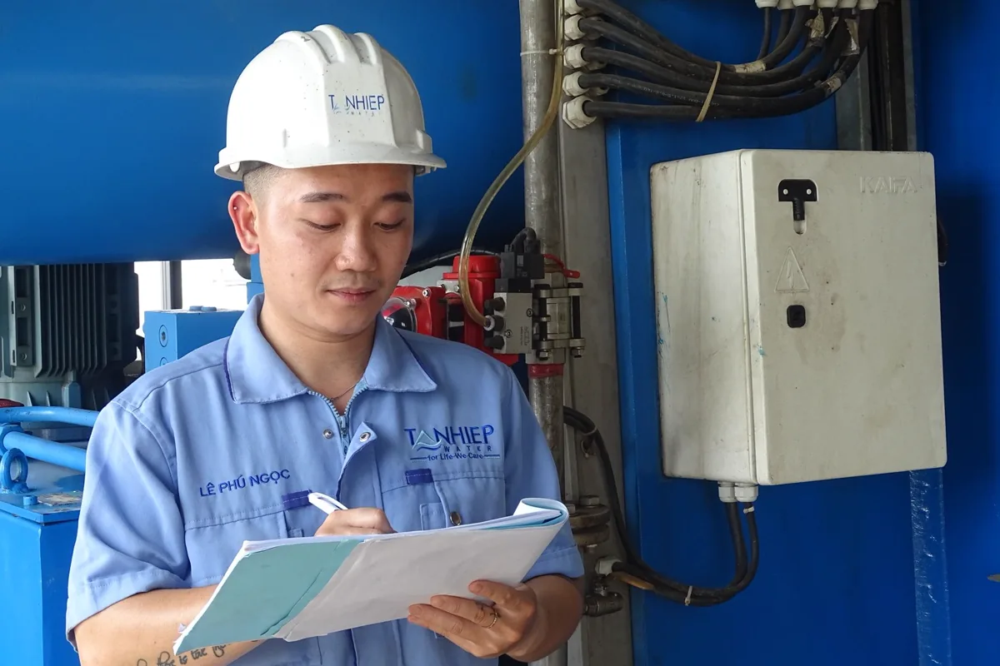

O que é um laudo técnico de engenharia
Laudo técnico é o documento em que um engenheiro habilitado descreve o que examinou, como examinou e a que conclusão chegou. Ele só tem peso quando três coisas andam juntas: vistoria presencial, método declarado e ART registrada no CREA-ES vinculando o profissional ao serviço.
Na prática, o laudo é pedido quando alguém precisa decidir com segurança e não quer assumir o risco sozinho: a seguradora antes de pagar o sinistro, o banco antes de liberar o financiamento, o proprietário antes de alugar o galpão, a prefeitura antes de conceder o alvará, o síndico antes de aprovar uma obra em assembleia.
Atendemos Vitória, Vila Velha, Serra, Cariacica, Viana, Guarapari e Fundão, além dos polos industriais de Aracruz, Anchieta e Linhares.
Tipos de laudo que emitimos
Laudo estrutural de galpão e edificação
Avaliação da estrutura existente — concreto armado, estrutura metálica ou alvenaria estrutural — com mapeamento de fissuras, verificação de flechas, conferência de apoios, avaliação de corrosão em armadura e em perfil metálico e, quando necessário, ensaios de esclerometria, pacometria e ultrassom. É o laudo pedido antes de aumentar carga em piso, instalar ponte rolante, colocar mezanino ou receber equipamento pesado. Casos de perda de seção por corrosão são tratados em detalhe na página de patologias e corrosão estrutural.
Laudo técnico de instalações prediais
Verificação de instalação elétrica, hidráulica, de gás e de combate a incêndio, com levantamento de não conformidades por norma e ordem de prioridade de correção. Em condomínio, esse laudo costuma vir junto do plano de manutenção descrito em manutenção predial para condomínios.
Vistoria cautelar de vizinhança
Registro do estado dos imóveis vizinhos antes do início de uma obra, com relatório fotográfico datado e descrição de cada patologia preexistente. É a defesa mais barata que existe contra a reclamação de dano que surge depois — e, sem ela, o ônus de provar que a trinca já existia recai sobre quem construiu.
Laudo de conformidade para seguradora, banco e contrato
Documento que atesta que a edificação, a instalação ou o equipamento atendem ao que o contrato ou a apólice exigem. Muito pedido em locação de galpão logístico, em contrato com órgão público e em auditoria de rede varejista.
Laudo de acessibilidade
Verificação de rota acessível, rampas, sanitários adaptados, sinalização e desníveis conforme a NBR 9050. Por ser um escopo com norma e checklist próprios, ele tem página dedicada: laudo de acessibilidade NBR 9050.
Laudos de equipamento sob pressão e de máquinas
Caldeira, vaso de pressão, tubulação e tanque seguem a NR-13; máquinas e equipamentos de produção seguem a NR-12. São laudos com norma regulamentadora própria, periodicidade definida e conteúdo mínimo obrigatório — por isso ficam em páginas separadas desta.
Como conduzimos o serviço
Definição do escopo
Entendemos para quem o laudo vai — seguradora, banco, prefeitura, juiz, contrato — porque o destinatário define o conteúdo mínimo e o nível de detalhe.
Vistoria em campo
Levantamento presencial com registro fotográfico datado, medições, ensaios complementares quando aplicável e conferência da documentação existente.
Análise e memória
Confronto do que foi medido com a norma aplicável, memória de cálculo quando há verificação estrutural, e classificação das não conformidades por risco.
Emissão e ART
Laudo assinado, com conclusão objetiva e recomendações executáveis, acompanhado da ART registrada no CREA-ES e do comprovante de pagamento da anotação.
O que um laudo bem feito precisa ter
- Identificação completa do objeto vistoriado, do solicitante e da finalidade do documento;
- Data e condições da vistoria — quem acompanhou, o que estava acessível e o que não estava;
- Método declarado: qual norma, qual equipamento, qual critério de aceitação;
- Registro fotográfico com legenda que amarra a foto ao ponto descrito no texto;
- Memória de cálculo sempre que houver verificação de carga, de vão ou de espessura;
- Conclusão objetiva, sem frase genérica do tipo "aparentemente em boas condições";
- Recomendações com prazo e prioridade, para o cliente conseguir orçar a correção;
- Ressalvas explícitas do que não foi examinado, e por quê;
- ART registrada, número visível no documento, assinatura e registro do profissional.
Erros que fazem o laudo ser recusado
| Erro | Consequência prática |
|---|---|
| Laudo sem ART registrada | Seguradora e banco devolvem o documento; em processo, perde força probatória |
| Conclusão vaga ou condicional | Quem recebeu não consegue decidir e pede novo laudo, com custo dobrado |
| Foto sem data e sem legenda | Impossível amarrar a imagem ao ponto descrito; a outra parte contesta |
| Cópia de modelo genérico da internet | Texto não bate com o que existe no imóvel e a falha fica evidente na primeira leitura técnica |
| Ausência de ressalva sobre o que não foi acessado | O profissional responde por área que sequer conseguiu vistoriar |
| Profissional sem atribuição para o serviço | O CREA não aceita a ART e o laudo cai por vício de origem |

Quando cada laudo costuma ser pedido
| Situação | Laudo indicado |
|---|---|
| Vou alugar ou devolver um galpão | Vistoria de entrada e saída + laudo estrutural |
| Vou instalar ponte rolante ou mezanino | Laudo estrutural com verificação de carga |
| Obra vizinha começou e apareceram trincas | Vistoria cautelar (idealmente antes) e laudo de danos |
| Seguradora pediu comprovação de conformidade | Laudo de instalações + laudo de combate a incêndio |
| Banco exige avaliação para financiar a planta | Laudo de conformidade e estado de conservação |
| Prefeitura pediu documento para o alvará | Laudo de acessibilidade e laudo de instalações |
| Assembleia vai aprovar reforma de fachada | Laudo de patologias com estimativa de intervenção |
Perguntas frequentes sobre laudo técnico e ART
Qual a diferença entre laudo técnico, parecer técnico e atestado?
Laudo técnico é o documento que descreve o que foi examinado, com que método, e conclui sobre o estado do objeto examinado — sempre a partir de vistoria e medição em campo. Parecer técnico é a opinião fundamentada do profissional sobre uma questão específica, e pode ser emitido sobre documentos, sem vistoria. Atestado é a declaração de um fato constatado, mais curto e sem a análise. Os três exigem responsável técnico habilitado; o laudo e o parecer normalmente exigem ART registrada.
Todo laudo de engenharia precisa de ART?
Sim, sempre que o serviço for atividade privativa de engenheiro. A ART é o registro no CREA que vincula o profissional ao serviço prestado e é o que dá validade legal ao documento perante seguradora, juiz, banco, prefeitura e órgão fiscalizador. Laudo assinado sem ART registrada tende a ser recusado exatamente quando mais importa: no sinistro, na vistoria e no processo.
Quanto custa um laudo técnico de engenharia?
O preço varia com a área vistoriada, a complexidade do objeto e a necessidade de ensaio complementar. Um laudo simples de instalação em imóvel comercial pequeno custa menos que um laudo estrutural de galpão com medição de recalque e ensaio de concreto. O que mais move o valor é o tempo de campo e se há necessidade de ensaio não destrutivo, esclerometria, ultrassom ou levantamento topográfico. Enviamos escopo e valor fechados antes de iniciar.
Em quanto tempo o laudo fica pronto?
Para escopos simples, de três a sete dias úteis após a vistoria. Laudos que dependem de ensaio de laboratório, monitoramento de fissura ao longo de semanas ou levantamento de grande área levam mais. O prazo entra na proposta junto com o escopo, e a data da vistoria é combinada para não parar a operação do cliente.
Vocês emitem laudo para galpão alugado antes da entrega das chaves?
Sim. É o caso clássico da vistoria de entrada e saída de locação de galpão e loja: registra o estado de piso, cobertura, calhas, estrutura, instalação elétrica, sistema de incêndio e esquadrias, com relatório fotográfico datado. Esse documento é o que separa desgaste normal de uso de dano indenizável quando o contrato termina.
Laudo técnico na Grande Vitória
Vistoria e emissão de laudo com ART nas cidades da região metropolitana e no interior do estado:
Precisa de um laudo com ART?
Diga para quem o documento vai e o que precisa ser atestado. Retornamos com escopo, prazo e valor fechados.
Continue lendo
- Patologias e corrosão estrutural — diagnóstico e tratamento
- Projeto estrutural: metálica, concreto armado e fundações
- Laudo de acessibilidade conforme a NBR 9050
- Manutenção predial e laudos para condomínios
- Inspeção NR-13 de caldeiras e vasos de pressão
- Página inicial — todos os serviços de engenharia